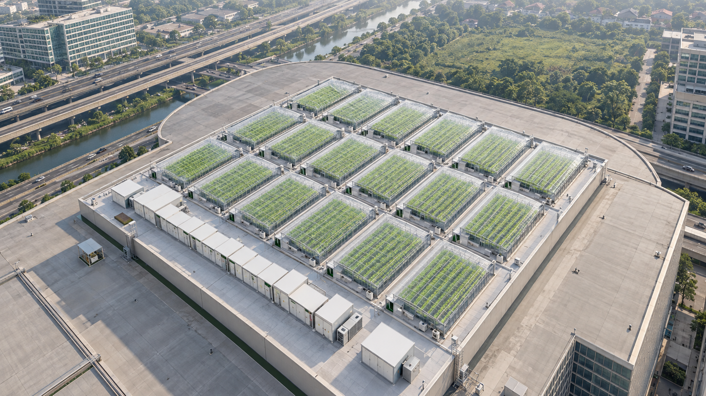

Pindai pada buah
Label membawa QR dan kode lot yang terbaca tanpa ponsel. Kode permanen menuju catatan lot yang sama.
01 / FROM SEED TO SHELF
Satu QR pada buah membuka asal kebun, langkah budidaya, panen, pemeriksaan mutu, dan perjalanan ke pelanggan—berdasarkan catatan lot yang sama dengan label.
Prototipe visual. Tidak memuat data panen aktual atau QR produk yang siap dicetak.
Varietas [sesuai lot]
Panen [tanggal]
Lot [ID lot]
02 / PENGALAMAN PEMBELI
Teknologi di belakang layar boleh rumit. Saat memindai, pelanggan langsung melihat asal, waktu panen, dan status mutu yang benar.
Label membawa QR dan kode lot yang terbaca tanpa ponsel. Kode permanen menuju catatan lot yang sama.
Sistem menghubungkan label dengan peristiwa semai, GH, panen, QC, pengemasan, dan pengiriman.
Halaman ponsel menunjukkan jejak lot dan pin kebun nyata. Foto kebun serta data sensor hanya tampil jika valid.
Satu QR pada setiap buah dapat menunjuk ke halaman lot yang sama. Riwayat per buah memerlukan serial dan pencatatan individual.
03 / JEJAK YANG DAPAT DIBUKTIKAN
Ketuk tahap untuk melihat apa yang pelanggan baca dan catatan apa yang harus dimiliki tim Melooloo.
Varietas dan lot benih adalah titik awal. Hanya identitas yang cocok dengan catatan tanam yang tampil di halaman buah.
ATURAN TAMPILTidak menyebut asal benih sebagai fakta jika belum dicocokkan dengan batch tanam.
Setiap tahap di bawah diisi dari catatan produksi yang sudah diperiksa.
04 / ASAL KEBUN
Lokasi pada halaman buah harus berasal dari ID kebun tempat lot itu tumbuh, lalu dikaitkan ke GH atau zona yang tercatat. Pin dan foto kebun tampil setelah lokasi fisik dikonfirmasi.
Model rooftop Mall Artha Gading dapat dibuka sebagai konsep desain 3D, tetapi tidak boleh menjadi asal panen pada halaman pelanggan sebelum operasionalnya terbukti.
Lihat model greenhouse 3D
VISUALISASI KONSEP · BUKAN ASAL LOT05 / RENCANA SISTEM
Pelanggan melihat kisah yang ringkas. Tim operasi menyimpan catatan lengkap, hubungan lot, koreksi, dan persetujuan mutu di belakangnya.
URL tetap pada domain sendiri; tidak berisi angka sensor atau data pribadi.
Apa, kapan, di mana, sumbernya, dan status pemeriksaan tiap langkah.
Asal, panen, QC, penyimpanan, dan lokasi yang sudah siap dipublikasikan.
QR di tiap buah menuju lot yang benar. Klaim mutu dibedakan antara pengukuran per buah dan sampel lot.
Ringkasan suhu, kelembapan, pH, atau EC hanya bila sensor, periode, dan GH cocok dengan lot serta datanya sudah diperiksa.
Serial per buah ditambahkan bila pencatatan timbang dan QC individual benar-benar berjalan.
06 / DARI PROTOTIPE KE PRODUK
Hubungkan batch tanam, GH, panen, QC, pengemasan, dan pengiriman. Lakukan uji telusur balik.
Cocokkan halaman dengan label fisik; uji QR pada buah dan kamera pelanggan sebelum mencetak massal.
Hubungkan hanya data sensor yang tercatat, memiliki konteks dan lolos pemeriksaan.
Gunakan serial unik untuk klaim individual, termasuk Brix per buah jika benar-benar diukur.
Dasar rancangan · Panduan Produk Melooloo §6 dan §8; Bab IV terbaru tentang label QR per buah; panduan GS1 untuk buah dan sayuran segar, Digital Link, serta peristiwa EPCIS. Halaman ini adalah rancangan, bukan sertifikasi atau rekaman batch aktual.